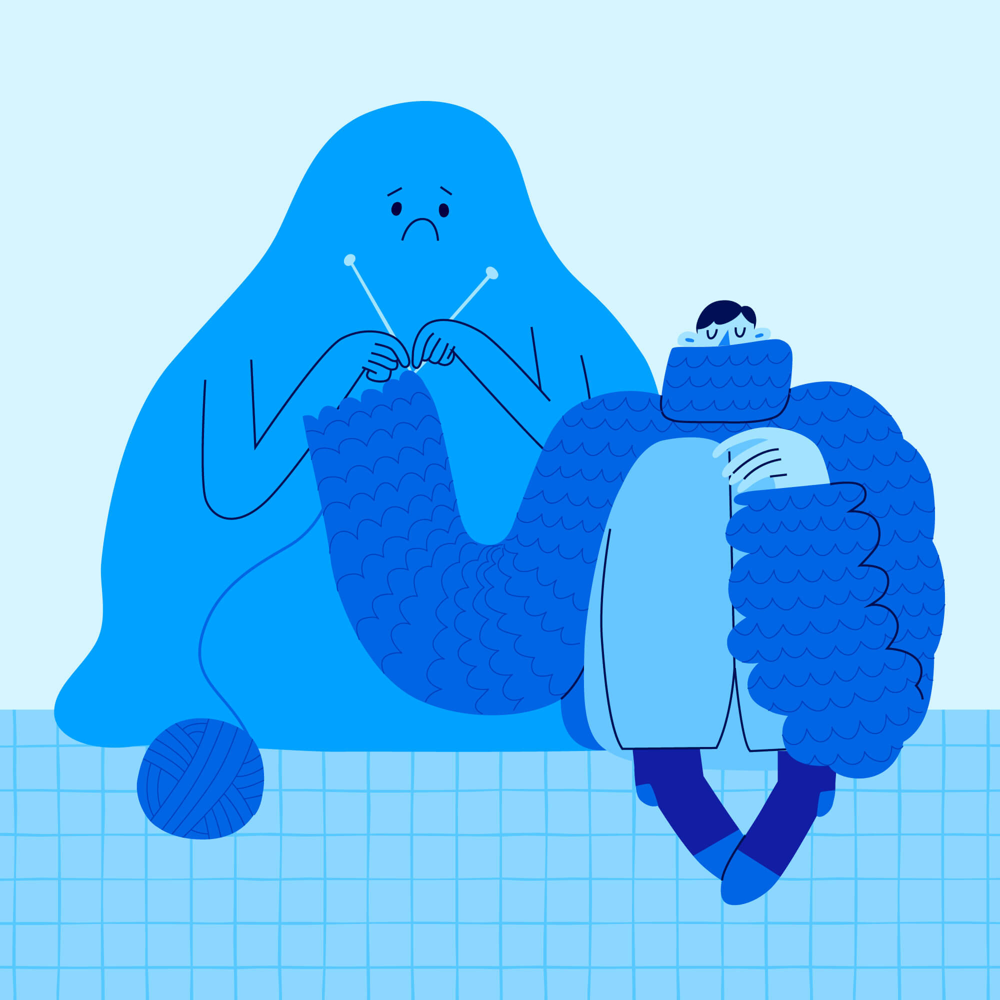

В течение всего модуля будет доступен ученический чат
По окончанию лекций в чат будет выкладываться ссылка на материалы к лекции
Регламент
Демонстрация выполненной домашней работы будет осуществляться посредством сервиса GitHub. Ссылки на
выполненную домашнюю работу отправлять по адресу portal-spb@ranepa.ru с указанием темы письма – например: ДЗ_4
Интернет — это глобальная сеть, которая объединяет устройства по всему миру и дает пользователям множество возможностей: работать, учиться, вести бизнес и так далее. В наши дни от работоспособности интернета зависят буквально все процессы жизнедеятельности
Кто «придумал» интернет
Ученый Леонард Клейнрок в 1960-х создал математическую теорию коммутации пакетов, которая лежит в основе технологии интернета
Кто «придумал» интернет
В 1962 году ученый Джозеф Ликлайдер опубликовал работу «Галактическая сеть», где впервые предложил концепцию работы компьютерной сети
Кто «придумал» интернет
В начале 1970-х ученые и изобретатели Винтон Серф и Роберт Кан разработали протоколы TCP (Transmission Control Protocol) и IP (Internet Protocol).
Разработчики Тим Бернерс Ли и Роберт Кайо в 1989 году предложили концепцию Всемирной паутины (World Wide Web), которая стала фундаментом для современного интернета
30 апреля 1993 года ЦЕРН передал программное обеспечение World Wide Web в общественное достояние
Интернет в Росии
7 апреля 1994 г — в нашей стране был зарегистрирован первый домен
28 августа 1990 г — в этот день ученые на компьютере в Институте атомной энергии имени И.В. Курчатова связались с учеными из университета Хельсинки с помощью модема, чтобы регулярно передавать почту по интернету
Программа, преобразующая содержимое веб-страниц в интерактивное изображение на экране
Blink
WebKit
Gecko
Trident
EdgeHTML
Chromium
Браузерный движок
Blink — движок, который используется браузерами Google Chrome, Microsoft Edge, Opera, Яндекс Браузер
и другими. Он является ответвлением от WebKit и поддерживает множество современных веб-стандартов и технологий
Браузерный движок
WebKit — движок, который используется браузером Safari и другими браузерами на основе Chromium. Он
был разработан на основе KHTML и также поддерживает множество современных веб-стандартов и технологий
Браузерный движок
Gecko — движок, который используется браузером Firefox и другими продуктами Mozilla. Он был
разработан с нуля и имеет свою собственную реализацию веб-стандартов и технологий
Браузерный движок
Trident — движок, который использовался браузером Internet Explorer до версии 11. Он был
проприетарным и не полностью соответствовал веб-стандартам, что вызывало проблемы с совместимостью и
безопасностью
Браузерный движок
EdgeHTML — движок, который использовался браузером Microsoft Edge до версии 79. Он был ответвлением
от Trident и имел улучшенную поддержку веб-стандартов и технологий
Браузерный движок
Chromium — движок, который используется браузерами Microsoft Edge, Brave, Vivaldi
Наличие собственных функций, концептуальные различия в работе, скорость и политика внедрений стандартов и
спецификаций, являются основной проблемой реализации кроссбраузерного отображения веб-сайта
Как работает веб
Немного терминов
Клиент — приложение, которое запущено на компьютере и подключено к Интернету
Сервер — компьютер, который подключен к Интернету
IP-адрес — числовой идентификатор устройства в сети TCP/IP
Интернет-провайдер — посредник между клиентом и серверами
DNS — распределенная база данных, которая хранит соответствие доменных имен компьютеров и их IP-адресов в Интернете
Немного терминов
Имя домена — используется для идентификации одного или нескольких IP-адресов (например, www.github.com)
TCP/IP — наиболее широко используемый протокол связи
Номер порта — число, которое идентифицирует определенный порт на сервере и всегда связано с IP-адресом
Немного терминов
Хост — это может быть клиент, сервер или любой другой тип устройства
HTTP — протокол передачи гипертекста
URL — URL-адреса идентифицируют конкретный веб-ресурс (например, https://github.com/someone)
* - объявил об уходе из России и отключении всех русских аккаунтов с 12 сентября 2024
Прототипирование
Прототипирование — это процесс создания модели будущего сайта, которая позволяет протестировать функциональность и дизайн до того, как он будет реализован полностью
Проверка гипотез
Экономия времени и денег
Тестирование функциональности
Уточнение идей и концепций
Проверка бюджета проекта
Сервисы для создания прототипов сайта
Figma
Axure RP
Sketch
InVision
Moqups
NinjaMock
Wireframe.cc
Webflow
UXPin
Верстальщик
это специалист, который выполняет верстку или преобразование дизайн-макета сайта в веб-форму. Он обеспечивает
правильное отображение страниц в браузере, упорядочивает код так, чтобы пользователю было наиболее комфортно
пользоваться сайтом.
Верстальщик
Верстальщик получает от дизайнера макет
Пишет код на HTML и CSS, чтобы страница в браузере отображалась точно так же, как на макете
Этот код верстальщик отправляет разработчикам, чтобы его добавили на сайт / добавляет сам
Техничечкие навыки верстальщика
HTML и CSS
Интерфейс среды для работы
Адаптивная вёрстка
Основы дизайна
Работа с препроцессорами
CMS и конструкторы
JavaScript
Soft skills для верстальщика
Умение общаться с коллегами
Управление временем
Английский язык
Эмпатия

Плюсы и минусы профессии верстальщика
+
Низкий порог входа
Не нужно глубоко погружаться в программирование
Перспективы для карьерного роста
-
Относительно невысокие зарплаты на старте
Однообразие задач
Частые изменения в сфере
Спецификации
Спецификация — это совокупность всех правил языка программирования, собранных в единый документ.
Доступность — это процесс создания среды, продуктов и услуг, которыми могут пользоваться люди с
инвалидностью. Иногда доступность определяют как степень, с которой что-то доступно для человека.
Веб-доступность
Веб-доступность (web accessibility) — создание сайтов, веб-приложений и связанных с вебом
инструментов, и технологий, которыми могут пользоваться люди с инвалидностью
Зачем заниматься веб-доступностью
Веб-доступность важна по нескольким причинам:
Правовая
Репутационная
Этическая
Расширение охвата пользователей
Материальная
Инновационная
Компоненты веб-доступности
User agents
Вспомогательные технологии
Веб-контент
Инструменты разработки
Люди
Принципы веб-доступности
Воспринимаемость (Perceivable)
Управляемость (Operable)
Понятность (Understandable)
Устойчивость (Robust)
Пользователи веб-доступности
Веб-доступность концентрируется на пользователях со следующими особенностями:
физическими или моторными
неврологическими
когнитивными
визуальными или зрительными
аудиальными
речевыми
Спецификации и стандарты
Стандартизацией веб-доступности занимается W3C и отдельная рабочая группа W3C WAI
(W3C Web Accessibility Initiative — Инициатива по веб-доступности W3C)
технические спецификации и стандарты
руководства и рекомендации
Руководства и рекомендации
WCAG — руководства по доступности веб-контента
ATAG (Authoring Tool Accessibility Guidelines, Руководства по доступности средств разработки) — рекомендации
по созданию доступных инструментов для разработки
UAAG (User Agent Accessibility Guidelines, Руководства по доступности User agent) — рекомендации для тех,
кто занимается браузерами и похожими технологиями
Инструменты разработчиков
HTML, CSS, SVG, JavaScript и другие языки, и технологии, особенно важна семантическая вёрстка
ARIA-разметка, когда не хватает возможностей HTML
Библиотеки с доступными компонентами
Автоматические тесты — свои тесты или библиотеки для тестирования
Инструменты разработчиков
Валидаторы кода
Браузерные расширения и инструменты разработчиков, букмарклеты, веб-сервисы
Ручное тестирование со вспомогательными технологиями и пользователями
Инструменты дизайнеров
Плагины для графических редакторов — проверка контраста, добавление подписей к элементам и пр.
Сервисы — генераторы палитр цветов, визуализация порядка фокуса и т. д.
Браузерные расширения — расчёт уровня контраста, имитация цветовой слепоты и др.
Готовые доступные дизайн-системы и библиотеки компонентов
Инструменты дизайнеров
UX-дизайн и исследования — юзабилити-тестирование, метод персон, интервью и т. п.
Инструменты создателей контента
Инструменты дизайнеров
Текстовые редакторы и веб-сервисы с проверкой орфографии, грамматики и сложности предложений.
Программы и сервисы для создания субтитров.
Программы для проверки вспышек и миганий в видео и анимации.
Плагины в графических редакторах — проверка уровня контраста, имитация цветовой слепоты и пр.
Законодательные требования
В Европе есть несколько важных документов о веб-доступности:
Директива о веб-доступности
Европейский закон о доступности
Европейский стандарт EN 301 549
На их основе принимаются все национальные законы о доступности в странах Евросоюза
Законодательные требования
В США:
Раздел 508
ADA
Законодательные требования
В России:
ФЗ № 419-ФЗ
ФЗ № 8-ФЗ
Приказ Министерства связи и массовых коммуникаций России № 483
ГОСТ Р 52872–2012. Интернет-ресурсы. Требования доступности для инвалидов по зрению
WCAG
Все эти законы используют требования из Руководства по обеспечению доступности веб-контента (Web Guidelines Access Content)
Microsoft, Apple, Google, Mozilla и другие компании запустили проект Interop. Это инициатива по улучшению браузеров и обеспечению единообразного взаимодействия пользователей со всеми платформами. Участники хотят добиться того, чтобы любая технология во всех браузерах работала одинаково
Объем реализации товаров, работ, услуг сектора ИКТ за I кв. 2024 г. составил порядка 1,7 трлн руб., существенно превысив значение за I кв. 2023 г. (+32,6%)
Среднесписочная численность работников сектора ИКТ в I кв. 2024 г. достигла максимального за последние годы значения — 1,5 млн человек (на 117,7 тыс. человек, или 8,5%, больше относительно I кв. 2023 г.)